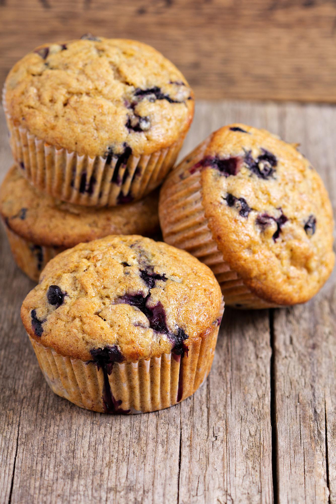

Home
Muffins

Muffins are small cakes typically baked in individual molds, with a soft
and airy texture. They can be sweet (with add-ins like blueberries, chocolate,
or nuts) or savory (for example, with cheese or vegetables). Muffin batter is quick to prepare — dry
and wet ingredients are mixed separately, then combined and immediately distributed into
molds. It's a simple and versatile recipe for homemade baking.
Ingredients
- 2 cups (250 g) all-purpose flour
- 1/2 cup (100 g) granulated sugar
- 1 tbsp baking powder
- 1/2 tsp salt
- 1 cup (240 ml) milk
- 1/3 cup (80 ml) vegetable oil or melted butter
- 1 large egg
- 1 tsp vanilla extract (optional)
Steps
- Preheat oven to 375°F (190°C). Line a 12-cup muffin tin with paper liners or lightly grease it.
- Mix dry ingredients in a large bowl: flour, sugar, baking powder, and salt.
- Combine wet ingredients in a separate bowl: milk, oil (or butter), egg, and vanilla. Whisk until smooth.
- Add wet to dry ingredients. Stir gently with a spoon or spatula until just combined. Do not overmix—it's okay if a few lumps remain.
- Fold in add-ins (if using) carefully.
- Spoon the batter into the muffin cups, filling each about 2/3 to 3/4 full.
- Bake for 18–22 minutes, or until the tops are lightly golden and a toothpick inserted into the center comes out clean.
- Cool in the pan for 5 minutes, then transfer to a wire rack.